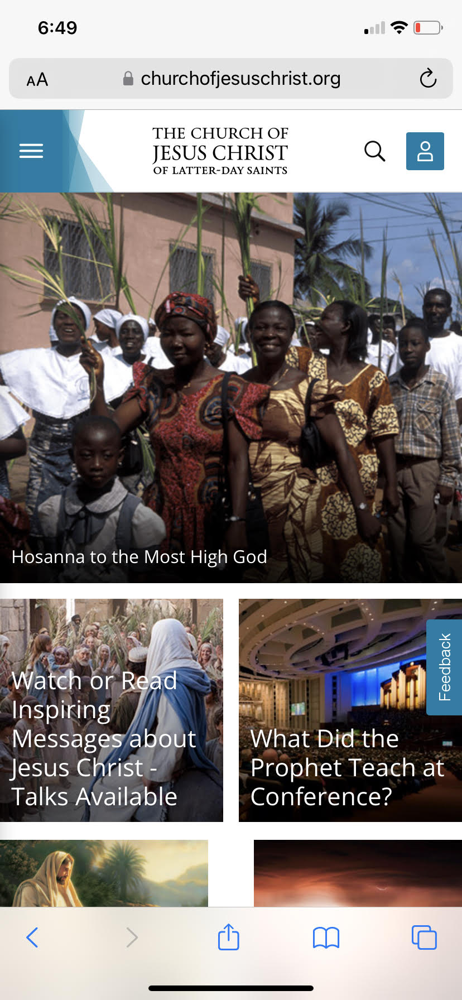
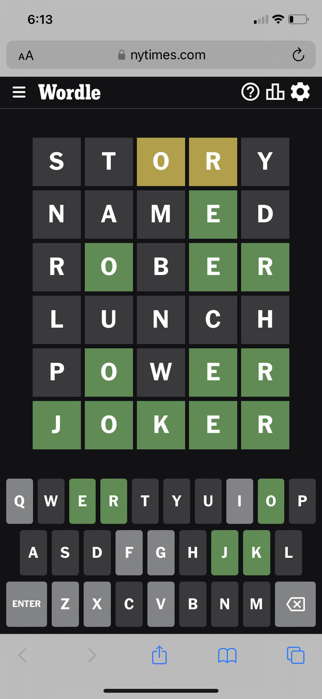

Repetition
Church of Jesus Christ of Latter Day Saints
churchofjesuschrist.org This website uses repetition by using the the same white text over different pictures to bring users to different articles. This gives visual cohesion to the site and indicates that the pages these pictures take you to are similar.
Hick's Law
NY Times
nytimes.com/games/wordle/index.html This webpage uses Hick's Law by limiting the options the user can click on. The only options on this page are the link to the homepage, the menu icon, and the word game. This makes it very simple for the user to use it.
White Space and Clean Design
This website uses white space and clean design around its logo and search bar. The logo is simple with just a word on a white background. The search bar is just a gray oval outline with a magnifying glass and camera.